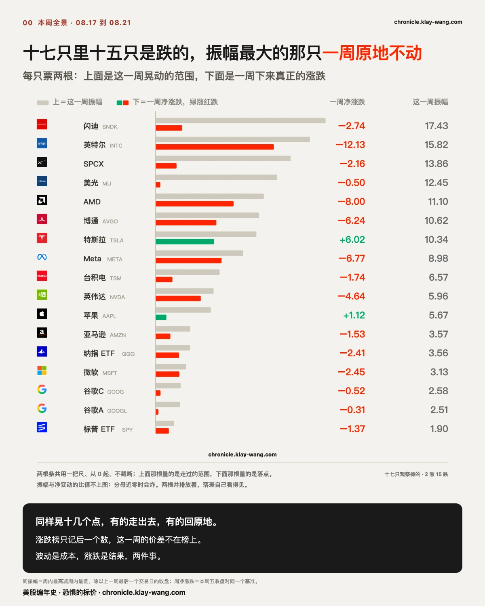
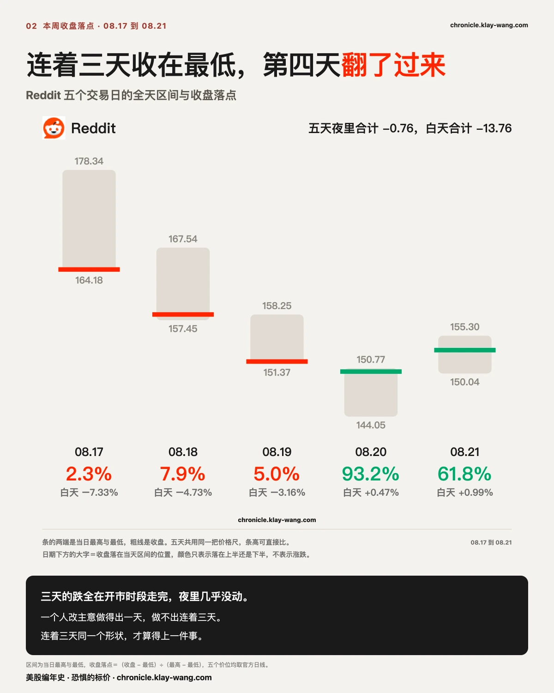
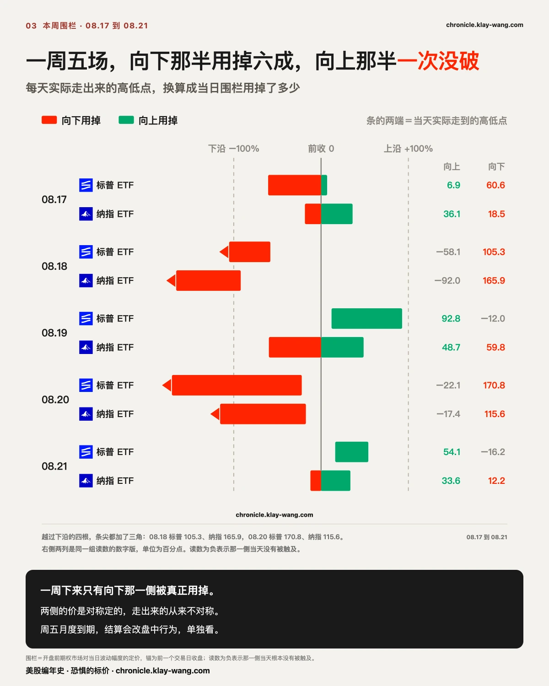
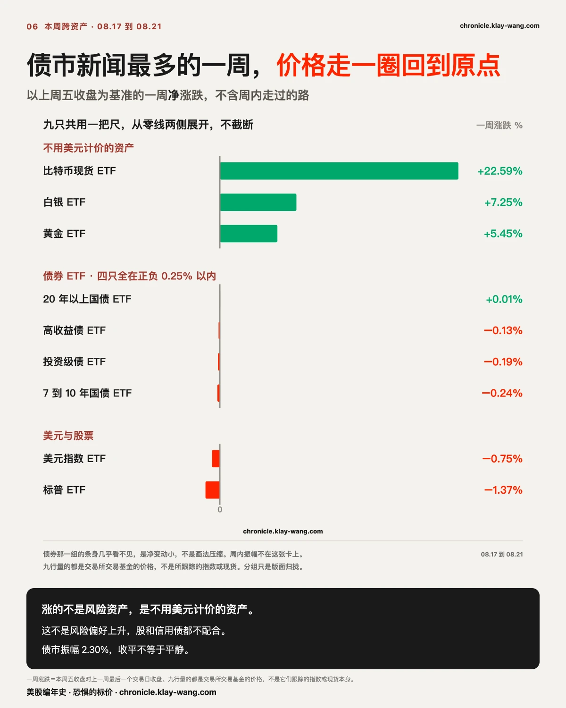
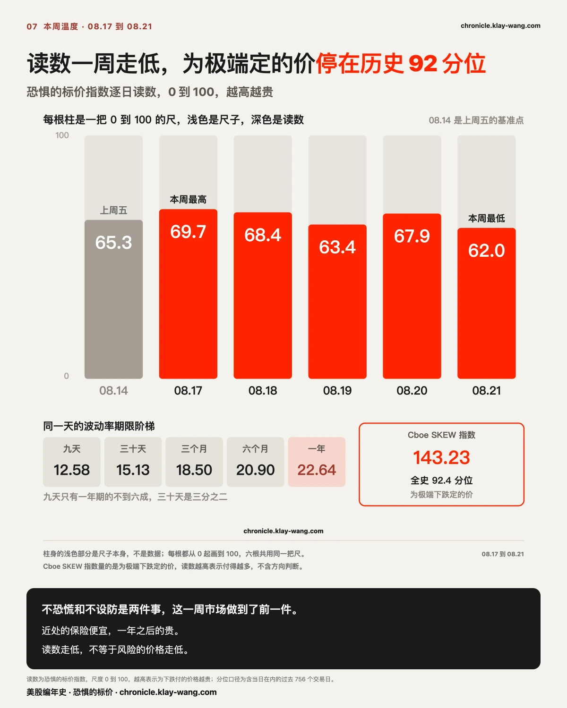
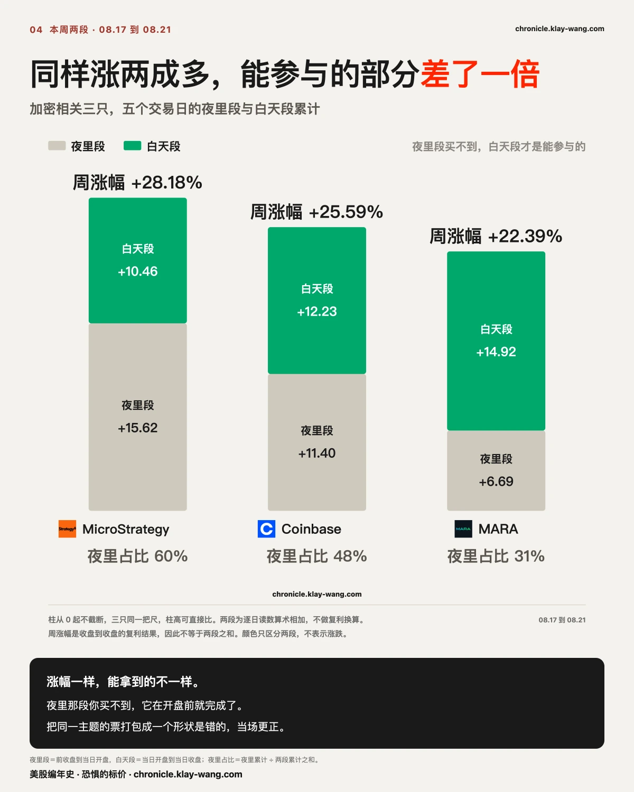
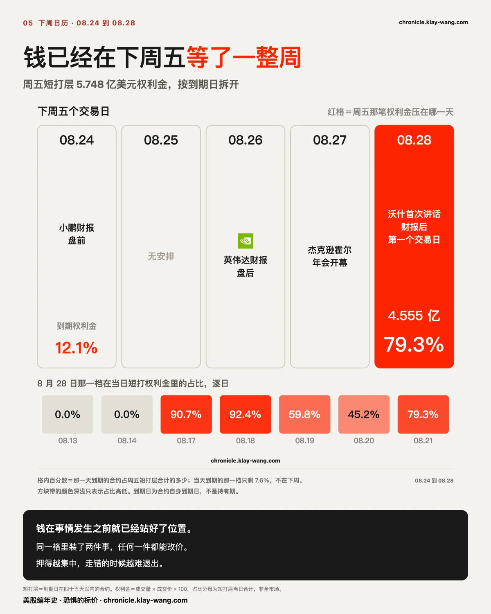

特朗普又开始卖股票了？8.17-8.21 本周回顾
三行干货
- 8 月 22 日披露的那份个人交易文件记的是六月的一千多笔交易，不是这一周。里面卖出至少 2850 万美元，买入超过 4900 万，是净买入。其中六月十八日卖掉的 Meta，到披露那天低了 4.73%，但中间一度高过卖出价 18.03%。
- 把每天拆成夜里和白天两段，五个交易日、两只指数、十个白天段读数没有一个是正的。标普 ETF 白天累计负 1.26、夜里负 0.10，白天占了全周跌幅的 93%；纳指 ETF 白天负 1.80、夜里负 0.62，白天占 74%。
- Reddit 周跌 13.92%，夜里总共只跌了 0.76，其余 13.76 全在开市时段走出来。它连着三天收在当天区间的 2.3%、7.9%、5.0%，第四天翻到 93.2%。
- 一周五场围栏，向下那半平均用掉六成到七成，下沿被冲破过四次，其中两次超过一倍半，上沿一次都没有；同期为极端下跌定的价在历史 92 分位。两把独立的尺子指向同一边。
Trump 又开始卖股票了？总账说没有
先把标题那个问题回答掉。
8 月 22 日提交的一份个人财务披露文件显示，六月里完成了一千多笔证券交易。买入超过 4900 万美元，卖出至少 2850 万美元。 两个数摆在一起，六月是净买入，不是在卖。
那为什么看上去像在卖。因为被挑出来讲的都是卖出那几笔：六月十八日卖 Meta 和摩托罗拉系统，六月二十二日卖掉一只先锋股息增长指数基金。同一天买进的伯克希尔 B、信达思、维萨、万事达，和六月二十二日买进的 FIS 与家得宝，不进标题。
这不是谁的问题，这是清单式新闻的默认形状：一千多笔交易，写出来的永远是最能讲成故事的那几笔。看总账和看清单，会得到相反的印象。
文件记的是六月的交易，8 月 22 日才披露。最长滞后接近十一周。
本篇后面还会讲到另一份披露文件，德鲁肯米勒的 13F。那份的截止日是六月三十日、八月中旬披露，滞后六周。这一份更长。
而且它比 13F 更没法用，因为金额只给区间。总交易额写的是 7810 万到 2.631 亿美元，上下差 3.37 倍。单笔也是区间：100 万到 500 万是 5 倍，1001 到 15000 美元是 15 倍。
举一个当场就能看出问题的例子。帕兰提尔那三笔：六月三日买入 1001 到 15000 美元，六月十六日卖出 15001 到 50000 美元，六月十八日卖出 50 万到 100 万美元。卖出的量级远大于买入的量级，而区间宽到你没法判断这中间到底发生了什么。 一份连金额都只肯给区间的文件，本身就是在说：不要拿我做推断。
Meta 在我们跟踪的十七只里，所以这一笔我们能对表。
六月十八日 Meta 收 577.22，那是卖出发生的那天。
- 七月十五日收 681.31，比卖出价高 18.03%
- 七月三十日收 539.03，从那个高点回落 20.88%
- 八月二十一日收 549.90，比卖出价低 4.73%
文件是八月二十二日披露的。所以读到它的那一天，你看见的是一笔躲掉 4.73% 的卖出，看上去卖对了。但这笔卖出在中间那十七个交易日里是错的，错了 18.03%。
这和本篇后面债市那一节说的是同一件事，只是换了一种文件：净结果记的是终点，路是另一回事。 债市那边是走了一圈回到原点，这边是先错一个月再对回来。两处都一样，等你能看见的时候，路已经走完了。
所以披露文件的用法不是跟着做，是拿来对表。 它告诉你某个人在某一天做了什么，不告诉你他为什么做，更不告诉你现在还成不成立。真正有用的是把它和你自己量得到的东西并排放：卖出价 577.22 是一个坐标，这一周的 549.90 是另一个坐标，两个坐标之间那条 18.03% 再回来的路，才是这两个月真正发生的事。
推翻它的条件写在这里：如果下一份披露出来的时候，文件里的交易日和披露日之间的差距缩到两周以内，那么滞后这条批评就不成立了，届时收回。
说完那份两个月前的文件，回到这一周。同样一件事我们可以不用等两个月，因为价格是当天就有的。
这一周讲什么
先看一个数。
把每天的涨跌拆成两段，夜里那段是从前收盘到今天开盘，白天那段是从开盘到收盘。这一周五个交易日，标普 ETF 的白天段是负 0.45、负 0.16、负 0.17、负 0.44、负 0.04。纳指 ETF 是负 0.42、负 0.37、负 0.60、负 0.16、负 0.25。
十个读数，没有一个是正的。
标普 ETF 这一周两段合计跌 1.36，其中 1.26 走在白天，占 93%。纳指 ETF 合计跌 2.42，白天走了 1.80，占 74%。
夜里不是没有跌，标普 ETF 五个夜里有三个是负的。但夜里跌完常常在白天继续跌，而白天从来没有把夜里的跌补回来过。

十七只里十五只是跌的，而振幅最大的那只一周原地不动
先把这一周的全景摆出来。我们跟踪的十七只，十五只收跌，只有特斯拉和苹果收涨。
把每只票的周振幅（周内最高减最低，除以上周五收盘）和一周净涨跌并排放，差距大得离谱：
- 闪迪振幅 17.43%，全场最大，一周净变动 负 2.74%
- 美光振幅 12.45%，一周净变动 负 0.50%，晃动是净变动的 24.8 倍
- SpaceX 振幅 13.86%，净变动负 2.16%
- 相比之下英特尔振幅 15.82%，净变动负 12.13%，这一只是真的走掉了
同样是一周晃十几个点，有的走出去了，有的回到原地。涨跌榜只记后一个数。
美光那 24.8 倍是这一周最值得记住的比例。一个整周在你眼前上下十二个点的东西，收盘价告诉你它什么都没发生。

Reddit 这一周，是被人一天一天卖下去的
这一周跌得最狠的是 Reddit，13.92%。把它五天摊开走一遍，能看清一件事长什么样。
8 月 17 日：前收 178.09，开在 177.51，几乎平开。开盘后先摸高到 178.34，然后一路往下，最低 164.18，收 164.50。当天振幅 7.95%，白天段跌 7.33%。收盘落在当天区间的 2.3% 位置，也就是说，收盘价离全天最低只差三毛二。
8 月 18 日：开 166.10，高 167.54，低 157.45，收 158.25。白天段跌 4.73%。收在区间 7.9%。
8 月 19 日：开 156.66，高 158.25，低 151.37，收 151.71。白天段跌 3.16%。收在区间 5.0%。
三个交易日，每天都是平开、盘中往下、收在离最低只有一小截的地方。夜里那三天合计只动了负 0.36。
这个形状和上周五 Robinhood 那一天不一样，不一样的地方正是它的意思。
Robinhood 8 月 20 日也收在区间 18.2%，我们当时读成出货，第二天就被 13.70% 打脸。一天的低位收盘只说明那一天的买盘接不住，不说明第二天。
但 Reddit 连着三天收在 2.3%、7.9%、5.0%，而且三天都是白天走的、夜里几乎不动。一个人临时改主意可以做出一天这样的图形，做不出连着三天的。连着三天在同一时段、同一位置收盘，那是有人按计划在卖，卖完为止。
卖完了吗。8 月 20 日它收在区间 93.2%，8 月 21 日 61.8%，最后两天的白天段转正，分别是正 0.47 和正 0.99。三天的下坡在第四天停住了。

同样的方法，另外两只给出不同答案
ARM 这一周跌 12.93%，白天段占 11.42，也是八成以上。但它的收盘位置是 0.9%、52.5%、29.6%、94.3%、6.1%，没有连续性，最后一天又收回到 6.1%。
英特尔跌 12.13%，白天段 9.91，收盘位置 40.5%、35.3%、22.0%、80.6%、10.6%，同样是散的。
同样是白天在跌，Reddit 是三天一个节奏卖完，另外两只是断断续续。前者像一笔有计划的减持，后者更像持续的无人接盘。 这两件事在涨跌榜上长得一模一样，都是一根绿柱。
一周五场围栏，钱一直偏在下面
围栏是每天开盘前期权市场对当日波动范围的定价。把实际走出来的高低点换算成用掉了这个范围的多少，就知道钱押在哪一边。
五场下来，标普 ETF 向上那半平均用掉 14.7%，向下那半 61.7%。纳指 ETF 向上 1.8%，向下 74.4%。
下沿被冲破过四次：8 月 18 日标普 ETF 用掉 105.3%、纳指 ETF 165.9%，8 月 20 日标普 ETF 170.8%、纳指 ETF 115.6%。其中两次超过一倍半。上沿一次都没有被冲破。
唯一的例外是周五，两只都是向上用得多。那天是月度到期日，结算本身会改变盘中行为，这一天要单独看，不能拿它去抵消前面四天。

债市新闻最多的一周，价格走完一整圈回到了原点
这一周宏观面的头条几乎全给了国债：财政部把长债回购规模至少翻倍，三十年期收益率在二十年高位附近来回，媒体给它起了准量化宽松这样的名字。
然后看价格。以上周五收盘为基准，二十年以上国债 ETF 这一周动了 正 0.01%。七到十年 负 0.24%，投资级信用债 负 0.19%，高收益债 负 0.13%。
但净变动只是这一周的一半，而且是没意思的那一半。
把周内走过的路也量出来。二十年以上国债 ETF 这一周最高 83.06，出现在 8 月 19 日，最低 81.17，出现在 8 月 18 日。最高和最低差了 1.89 美元，而上周五收盘到这周五收盘只差了 1 美分，走过的路是净变动的 189 倍。以上周五收盘为分母，这个振幅是 2.30%。
2.30% 放回过去 39 周里排，是第六宽的一周，第 85 百分位，中位数只有 1.60%。而排在它前面的那五周，净变动分别是负 2.17%、正 2.49%、负 1.20%、负 2.81%、负 2.12%，没有一周像这一周这样收在原地。
再换一个角度看同一件事。过去 39 周里，净变动落在正负 0.30% 以内的一共七周。这七周里振幅第二名是 1.70%，而这一周是 2.30%。在所有收平的星期里，这一周是动得最凶的那一个。
所以准确的说法不是债市没动，是债市动完一整圈之后回到了原点。走完一圈的市场和没动的市场，在周线上长得一模一样，在里面的人经历的完全是两回事。这也正是我们在美光那一节说过的同一件事：涨跌榜只记后一个数。这次轮到我们自己差点只记后一个数。
那为什么走了一圈又回来。这一周给了一个很干净的答案。
财政部 8 月 19 日宣布扩大回购，当天长端确实压下去了。到 8 月 20 日，三十年期涨回约 7 个基点到 5.26%，回到公告之前的水平。 一天。
贝森特自己的回应是，任何在二十四小时内发生的事情都只是噪音。这句话可以两头读，而市场用价格给了另一头：公告能造出一天的行情，造不出一周的。
机制上不难理解。回购换的是谁持有这张债，不是这张债本身还在不在。财政部买回长端，转头要靠发行别的期限把钱补上，债务总量一分没少。买家换了，欠条没变。
所以这一周真正被定价的不是回购，是回购没能改变的那件事。二十年以上国债 ETF 一周净动 0.01%，同时振幅 2.30%，这两个数要放在一起看才是市场给这场操作的评分：值得交易一个星期，不值得改变定价。
德鲁肯米勒把过去十年的财政状况比作看恐怖片，达利欧把利息支出比作血管里堆积的斑块，格里芬说财政不整顿就会有人出来收账。这些话讲的是赤字、是利息支出、是期限溢价、是谁来接下一批长债。那是一个关于水位的判断，不是一个关于这五天的判断。
我们量的是五个交易日的净变动和振幅。这两件事可以同时为真，而且这一周恰好同时为真：长期的担忧没有被这一周的价格反驳，这一周的价格也没有替那份担忧提前兑现。
如果非要说这一周给出了什么新证据，是这一条：三十年期能在一天之内把公告带来的全部涨幅还回去，说明这个市场对政策消息的记忆很短。而记忆短不等于没有风险。它的意思是，风险不会通过慢慢渗透来表达，会通过某一次突然的重新定价来表达。一个振幅排到第 85 百分位、净变动却是零的星期，恰恰是这种市场的样子，不是平静市场的样子。
我们会怎么知道自己读错了：如果下一次能推动长端的宏观事件出来之后，长端的方向能连续三个交易日不被抹平，那么公告造不出一周行情这个读法就该收回。最近的一次是 8 月 26 日的 PCE，届时回来对。
真正在动的在另一边。美元指数 ETF 负 0.75%，黄金 ETF 正 5.45%，白银 ETF 正 7.25%，比特币现货 ETF 正 22.59%。
这里有一个很容易顺口说错的读法：风险偏好上升了。
不是。 如果是风险偏好上升，股票和信用债不会跌。而这一周标普 ETF 负 1.37%，投资级负 0.19%，高收益负 0.13%，三个都在跌。
涨的不是风险资产，涨的是不用美元计价的资产。黄金、白银、比特币这三样的共同点不是风险高，是它们都不是美元的欠条。同一周美元在跌，它们在涨。
这也给加密那三只提供了另一个读法。MicroStrategy 涨 28.18%、Coinbase 25.59%、MARA 22.39%，把它们读成风险偏好回来了，和把它们读成美元的镜像，是两件完全不同的事，而这一周的证据偏向后者。
推翻它的条件写在这里：如果下周美元反弹而这三只继续涨，那么美元镜像这个读法不成立。

另一把尺子给出同样的答案
围栏量的是实际走出来的幅度。还有一把量的是为极端付的价格。
周五收盘，Cboe SKEW 指数 143.23，处在全史 92.4 分位。这个指数由标普指数的虚值期权推出来，读数越高，说明市场为尾部下跌付的钱越多。
同一天的波动率期限阶梯：九天 12.58，三十天 15.13，三个月 18.50，六个月 20.90，一年 22.64。三十天那一档 15.13 是一年期 22.64 的三分之二，九天那一档 12.58 连六成都不到。
三十天那一档是一年期的三分之二，九天那一档连六成都不到，而为极端定的价在历史高位。恐惧的标价这一周的读数是 65.3、69.7、68.4、63.4、67.9、62，周一冲到最高的 69.7，周五收在最低的 62，五天里没有一天进入高位。
不恐慌和不设防是两件事，这一周市场做到了前一件。 读数在往下走的同时，为极端下跌定的价停在历史 92 分位，这两件事同时为真。

有人说现在没人买保护，我们量到的不是这样
这一周有一份流传很广的警告：中期选举年八月到十月是最危险的季节窗口，1990 年以来除 2006 年外每年至少 7% 回调，而现在市场以历史高位入场、波动率在年内低点、保护需求几近缺失。给出的证据是芝加哥期权交易所综合看跌看涨比率的十日均线降到 0.82，处在数年低位。
季节性那部分我们不评价，那是我们量不到的东西。但保护需求这一条，我们自己有尺子，而且量出来的不是这个数。
这一周标普 ETF 的看跌看涨成交比逐日是 1.13、1.33、1.42、1.18、1.39，五日均 1.29。纳指 ETF 是 0.94、1.19、1.14、0.96、1.32，五日均 1.11。两只都在 1 以上，也就是看跌的成交量多于看涨。
同一件事，两个数字，差在哪里。
差在量的东西不一样。 综合比率覆盖全市场所有标的，把一堆个股的投机性看涨也算进去，那些看涨买单会把分母撑大。我们量的是两只大盘 ETF，那里才是机构对冲真正落地的地方。全市场没人买保护，和指数那一层一直有人买保护，可以同时为真。
更要紧的是第三个数。周五收盘 Cboe SKEW 指数 143.23，全史 92.4 分位，量的是市场为极端下跌付的价。
三个读数放在一起，图就完整了：买保护的人数可能不多，但买的人付的是历史高价。 保护这门生意这一周不是没人做，是变贵了。这两件事在情绪指标上长得一模一样，在价格上完全不同。
这句话可以被推翻：如果下周标普 ETF 的看跌看涨比掉回 1 以下，同时 SKEW 退出 90 分位，那么保护变贵这个读法收回，那份警告在这一条上就是对的。
涨的那一组，不能打包写
同一周涨得最猛的是加密相关三只：MicroStrategy 涨 28.18%，Coinbase 涨 25.59%，MARA 涨 22.39%。
按同样的方法拆开，三只完全不同。MicroStrategy 夜里累计 15.62、白天 10.46，一多半涨在你买不到的时段。Coinbase 夜里 11.40、白天 12.23，几乎一半一半。MARA 夜里 6.69、白天 14.92，主要涨在白天。
周三周四曾出现过涨幅集中在跳空里的形状，当时写的是涨幅还在、能参与的部分没了。放到整周看，这个说法只对 MicroStrategy 成立。
同一个主题下的票，参与的难度可以差一倍。把它们打包成一个形状是错的，这一条当场更正。
还有一个流行的归因要拆掉：这一波是监管利好推的。
恰恰相反。 旨在给数字资产市场结构立规矩的《清晰法案》这一周仍卡在参议院，两党在道德条款上谈不拢，其中一部分争议与总统本人参与这个行业有关。真正落地的只有证券交易委员会提出的一项方案，允许部分数字资产发行免于提交注册声明，而那是提案不是规则。
法案没过，行情却走了三成。所以推动它的不是立法，是上一节那件事：美元跌了 0.75%，而这三只是美元的镜像。
再加一个纯结构的因素。周三比特币突破七万美元那天，一小时内超过十亿美元的空头仓位被强制平仓，是有记录以来最大的一次比特币空头清算。空头回补制造的买盘不需要任何人看多，它只需要有人被迫。 把这种买盘读成信心回来了，是这一周最容易犯的错。

存储：四个市场，四个答案
这一周存储那几只票的叙事面异常热闹。
SK 海力士 8 月 19 日韩股收盘后正式公告，回购并注销 40 万亿韩元的股份，涉及 2407 万股，占已发行股份的 3.3%。这是韩国上市公司史上最大规模的股份回购，也是这一周里唯一一条公司自己掏钱买自己的。
三星的股东回报计划在同一周被反复报道，规模区间说的是 90 万亿到 110 万亿韩元，最终数字以公司公告为准，这里不引用区间上沿当作已定的数。美光公布跨十年约 100 亿美元的研究实验室计划。闪迪发布新的存储产品线。
而美银引用 EPFR 的数据，半导体 ETF 已经连续三周净流出，累计 63 亿美元。
现货盘口这一侧，美光和闪迪周五的成交量只有前二十日均量的 0.54 倍和 0.43 倍。
期权那一侧，闪迪是周五单一合约权利金最重的那一档，8 月 28 日到期的 1600 看涨，1409 万美元，成交量是持仓量的 2.4 倍。
叙事在买方，资金流在卖方，现货在观望，期权在下注。同一批公司，四个市场四个答案。这种时候不必急着挑一个信，先记住它们不一致，比记住任何一个答案都有用。
一份 13F，和我们这一周量到的三只票
八月中旬披露的二季度持仓文件里，德鲁肯米勒的家族办公室清空了博通、英特尔和美光，同时新建 AMD、加仓台积电，并把亚马逊仓位扩大逾十倍。媒体给的读法是押注 AI 大平台、抛弃传统半导体。
这份文件的截止日是六月三十日，披露是八月中旬。它描述的是六周以前的决定。
有意思的地方在于，他清掉的那三只全都在我们跟踪的十七只里，而这一周它们的表现完全不一样。
- 英特尔 周跌 12.13%，周振幅 15.82%。这一只是真的走掉了，跌幅占了振幅的八成。
- 博通 周跌 6.24%，同时它的近月保险相对一年期越走越贵，倒挂本周创新高。
- 美光 周净跌 0.50%，而周振幅 12.45%，晃动是净变动的 24.8 倍。它在原地。
而他买入的 AMD，这一周跌 8.00%。
同一个清仓半导体的决定，落到三只票上是三个完全不同的结果。 一只真的下去了，一只一边跌一边有人给近月加价，一只晃了一整周什么也没发生。
所以 13F 的价值不在于跟着买。它的价值是给你一个可以对表的基准：一个顶级投资人六月底做的判断，两个月后被市场怎么对待。这三只给出的答案是，那个判断在英特尔身上兑现了，在美光身上还没有，在博通身上出现了它没有覆盖的东西。
这也是我们一直说的那件事的另一个版本。申报文件告诉你他们六周前买了什么，期权链告诉你今天有人愿意用什么价买。后者你当天就能看见。
下周：两件事撞在同一天
周五那天，短打层 5.748 亿美元权利金里，79.3% 压在 8 月 28 日到期这一档上。而那个日期从 8 月 17 日起就一直是这个市场的焦点，五个交易日里只被打断过两天。
8 月 26 日盘后英伟达发财报，28 日是财报之后的第一个交易日。同一周，杰克逊霍尔年会 27 日开幕，沃什作为美联储主席的首次讲话安排在 28 日。
沃什 5 月接替鲍威尔上任，到现在没有说明过什么情景会触发利率调整，而通胀已经连续五年高于 2% 的目标，当前联邦基金利率在 3.50% 到 3.75%。市场要在同一天里，既消化一份财报，又第一次听这个人怎么说话。
值得说清楚的是，市场为这一天付的钱，买的不是他会说什么。
一场讲话能被定价，靠的不是内容而是反应函数：市场想知道的是什么情况下他会动利率。知道了这个，后面每一个通胀读数、每一份就业数据，市场都能自己算。不知道，那每一个数据日都得重新猜一遍。
而这正是沃什至今没给过的东西。高盛的说法是，他在推动央行进入一个透明度更低的阶段，缩短会后声明、减少前瞻指引、弱化经济预测的作用，并且七月那次会议已经成了近三十年来非降息会议里最大的一次市场意外。
所以 8 月 28 日真正的分岔不在鹰派还是鸽派。在于他讲完之后，市场是多了一把可以自己用的尺子，还是只多了一段需要再猜一遍的话。 前者会让后面几个月的波动率便宜下来，后者会让它一直贵着。
这也解释了为什么钱压在财报之后那一天而不是财报当天：一份财报只影响一只票，一把反应函数影响所有票的定价方式。
特斯拉那 1.643 亿里有 1.627 亿也压在 8 月 28 日，全是看涨，行权价从 340 铺到 380。钱已经在那里等了一周。

这对你手里的票意味着什么
不给操作建议，只把这一周的价格换算成你能自己判断的东西。
手里有连着几天收在低位的票：看它是不是每天都收在同一个位置、跌是不是都发生在白天。一天说明不了什么，三天同一个节奏，那一头大概率还没走完，也可能刚走完。 Reddit 是第四天停的。
手里有这一周涨得很猛的票：先拆两段再高兴。同样涨两成多，MicroStrategy 有一多半涨在你买不到的时段，MARA 主要涨在白天，这两件事对你的意义完全不同。
手里有存储票：四个市场今天给了四个答案。四个都对不上的时候，仓位比观点重要。
什么都没拿，在等一个进场点：这一周向下那半的围栏被用掉六到七成，而三十天的保险只有一年期的三分之二。市场认为下周不会有事，同时一直在为万一付历史高价。这个组合本身就是可以被证伪的东西，下周就能看出来。
希望这篇对你有用
- 总用涨跌榜挑票的人：第二节和第三节就够了。同样涨 5%，一种你买得到，一种你买不到，涨跌榜不区分这件事。
- 觉得这一周市场很平静的人：第五节和第七节给的是两把独立尺子的读数。指数确实没怎么动，而钱一直偏在下跌那一边。
- 手里有存储票的人：第九节把四个市场的四个答案并排摆着，看完至少知道分歧在哪里。
这一周值得带走的三句话
标普 ETF 这一周 93% 的跌幅走在开着市的时段，纳指 ETF 74%，跌得最狠的三只在八成以上。夜里的卖不需要有人接，白天的卖每一股都得有人在对面。
一周五场围栏，向下那半平均用掉六成到七成，下沿被冲破过四次而上沿一次都没有，同期为尾部定的价在历史 92 分位。市场没有恐慌，但它一直在为下跌那一边付钱。
同一个主题下的票不能打包写。加密三只这一周涨了两成到近三成，拆开看一只涨在夜里、一只涨在白天、一只一半一半，参与的难度完全不同。
下周要回访的
8 月 28 日那一档的 4.555 亿在财报之后是增厚还是了结。判据：若 8 月 26 日之后该档权利金较 8 月 21 日下降过半，那么这一周的集中只是事件前的排队。
指数白天段的连负会不会断。判据：下周任意一天标普 ETF 与纳指 ETF 的白天段同时收正，这一周的形状即告结束，届时回来记一笔。
存储的四个答案哪个先动。判据：若美光与闪迪的成交量回到均量之上而价格不涨，说明现货那一侧开始接货；若量仍在一倍以下，观望继续。
城堡那条时间线不做任何跟进归因。它是一个关于我们自己尺子的注脚，不是一个交易线索。
恐惧的标价指数（Fear-Price Index）· 2026-08-21 · 读数 62/100：一年期波动率 VIX1Y 为 22.64，处于近三年第 62 百分位，高即贵。逐日台账与口径 → chronicle.klay-wang.com · 转载注明：恐惧的标价指数 · Market Chronicle
🌍 English edition
English edition · title + subtitle
Title: Is Trump Selling Stocks Again? The Week of August 17 to 21
Subtitle: The filing says no, he was a net buyer in June. And the names that were genuinely sold this week were sold while the market was open
[Disclosure] Is Trump Selling Stocks Again? The Ledger Says No
Answer the headline first.
A personal financial disclosure filed on August 22 shows more than a thousand securities transactions completed during June. Purchases exceeded 49 million dollars. Sales came to at least 28.5 million. Put the two together and June was a month of net buying, not selling.
So why does it read as selling. Because the trades that get written up are the sales. Meta and Motorola Solutions sold on June 18, a Vanguard dividend growth fund sold on June 22. The Berkshire B shares, Cintas, Visa and Mastercard bought the same day, and the FIS and Home Depot bought on the 22nd, do not make the headline.
That is not anyone's failure. It is the default shape of list journalism. Out of a thousand transactions, the ones that get written are the ones that make a story. The ledger and the list leave opposite impressions.
The trades are from June. The filing landed on August 22, a lag of close to eleven weeks.
The amounts are ranges, not numbers. The total is given as 78.1 million to 263.1 million dollars, a spread of 3.37 times. Individual lines run the same way: one to five million is a five times range, 1,001 to 15,000 dollars is a fifteen times range.
One line makes the problem visible on its own. Palantir: bought 1,001 to 15,000 dollars on June 3, sold 15,001 to 50,000 on June 16, then sold 500,000 to one million on June 18. The sales are an order of magnitude larger than the purchase, and the ranges are wide enough that you cannot reconstruct what happened in between. A document that will only give you ranges is telling you not to infer from it.
Meta is one of the seventeen names we track, so this one we can check.
Meta closed at 577.22 on June 18, the day of the sale.
- July 15 close 681.31, which is 18.03 percent above the sale
- July 30 close 539.03, a fall of 20.88 percent from that high
- August 21 close 549.90, 4.73 percent below the sale
The filing appeared on August 22. So on the day you could read it, the trade looked correct by 4.73 percent. It was wrong by 18.03 percent for seventeen sessions in between.
Which is the same point as the bond section further down, on a different document. The net records the endpoint. The path is a separate fact. Bonds went around and came back. This went wrong for a month and then came right. In both cases the road had already been travelled by the time anyone could see it.
So the use of a disclosure is not to copy it. It is to have something to check yourself against. It tells you what one person did on one day. It does not tell you why, and it does not tell you whether it still holds. The value is in placing it beside something you can measure: 577.22 is one coordinate, this week's 549.90 is another, and the 18.03 percent round trip between them is what actually happened over those two months.
How we would know we are wrong: if the next filing arrives with less than two weeks between the trades and the disclosure, the criticism about lag no longer applies and we withdraw it.
That was a document about June. Now to this week. The same kind of question does not need a two month wait, because the prices are available the same day.
What This Week Covers
Split every session into two legs. The overnight leg runs from the prior close to today's open. The daytime leg runs from the open to the close.
Across five sessions the S&P ETF posted daytime legs of minus 0.45, minus 0.16, minus 0.17, minus 0.44 and minus 0.04. The Nasdaq ETF posted minus 0.42, minus 0.37, minus 0.60, minus 0.16 and minus 0.25.
Ten readings. Not one of them positive.
The S&P ETF lost 1.36 across both legs this week and 1.26 of that came during hours, which is 93 percent. For the Nasdaq ETF the total was 2.42 with 1.80 during hours, or 74 percent.
The overnight leg was not always green. Three of five overnights were negative for the S&P ETF. But an overnight decline was usually followed by more decline during the day, and no daytime session gave any of it back.
[The Board] Fifteen of Seventeen Closed Lower, and the Widest Swinger Ended Where It Started
Seventeen names on the board. Fifteen closed lower. Only Tesla and Apple finished green.
Put each name's weekly swing next to its net weekly change and the gap is absurd. SanDisk swung 17.43 percent and finished the week down 2.74. Micron swung 12.45 percent and finished down 0.50, which makes the swing 24.8 times the net move. SpaceX swung 13.86 and finished down 2.16.
Intel is the counterexample that makes the point. It swung 15.82 percent and finished down 12.13. That one actually went somewhere.
Same twelve points of movement, and some names walked away while others came back to where they started. A leaderboard only records the second number.
[Distribution] Reddit Was Sold Down One Session at a Time
Reddit was the worst name of the week at minus 13.92 percent. Walking its five sessions gives you a picture of what deliberate selling looks like.
August 17. Prior close 178.09, opened 177.51, essentially flat. It ticked up to 178.34 and then went down all day to a low of 164.18, closing at 164.50. The day's range was 7.95 percent of the prior close and the daytime leg was minus 7.33. The close landed at 2.3 percent of the day's range, thirty two cents off the low.
August 18. Opened 166.10, high 167.54, low 157.45, close 158.25. Daytime leg minus 4.73. Close at 7.9 percent of range.
August 19. Opened 156.66, high 158.25, low 151.37, close 151.71. Daytime leg minus 3.16. Close at 5.0 percent of range.
Three sessions. Flat open, grind lower, close a hair off the low. The three overnight legs together moved minus 0.36.
Here is why this differs from Robinhood on August 20, and the difference is the whole point.
Robinhood also closed at 18.2 percent of its range that day. We read it as distribution and the next session answered with plus 13.70 percent. One low close tells you the bid could not hold that day. It tells you nothing about tomorrow.
Reddit closed at 2.3, then 7.9, then 5.0, three sessions running, every point of it during hours. A trader changing his mind can produce one session shaped like that. He cannot produce three. Three consecutive closes at the same place in the same window is someone working an order until it is done.
Was it done? August 20 closed at 93.2 percent of range and August 21 at 61.8 percent, with daytime legs of plus 0.47 and plus 0.99. The slide stopped on the fourth day.
[Contrast] The Same Method on Two Other Names Gives a Different Answer
ARM fell 12.93 percent on the week with 11.42 of it during hours, also above eighty percent. But its closing positions ran 0.9, 52.5, 29.6, 94.3 and 6.1 percent. No sequence.
Intel fell 12.13 with 9.91 during hours, and its closes ran 40.5, 35.3, 22.0, 80.6 and 10.6. Also scattered.
Both fell during the day, but Reddit sold on a rhythm and finished, while these two simply had nobody stepping in. On a leaderboard the three look identical. Three green bars.
[Fences] Five Sessions, and the Money Sat Below All Week
A fence is what the options market prices each morning as the day's likely range. Convert the actual high and low into how much of that range got used and you can see which side the money sat on.
Over five sessions the S&P ETF used an average of 14.7 percent of its upside half against 61.7 percent of its downside half. For the Nasdaq ETF the figures are 1.8 and 74.4.
The lower bound was breached four times: on August 18 the S&P ETF used 105.3 percent and the Nasdaq ETF 165.9, and on August 20 the S&P ETF used 170.8 and the Nasdaq ETF 115.6. Two of those went past one and a half times. The upper bound was never breached once.
Friday was the exception, with both names leaning up. That was monthly expiration and settlement changes intraday behaviour, so it gets read on its own rather than netted against the other four days.
[Cross Asset] The Week Bonds Owned the Headlines and Finished the Round Trip
Macro coverage this week went almost entirely to Treasuries. The department at least doubled its long-bond buyback, the thirty year traded around a two decade high, and the press found a name for it.
Then look at the prices. Measured from last Friday's close, the twenty year plus Treasury ETF moved plus 0.01 percent on the week. Seven to ten year, minus 0.24. Investment grade credit, minus 0.19. High yield, minus 0.13.
The net is only half the week, and it is the boring half.
Measure the ground covered. The twenty year plus Treasury ETF printed a high of 83.06 on August 19 and a low of 81.17 on August 18. High to low is 1.89 dollars. Friday close to Friday close is one cent. The ground covered is 189 times the net. Against last Friday's close that range is 2.30 percent.
Rank that 2.30 against the last 39 weeks and it is the sixth widest week, the 85th percentile, where the median is 1.60. The five weeks above it netted minus 2.17, plus 2.49, minus 1.20, minus 2.81 and minus 2.12. Not one of them finished where it started.
Same fact from the other side. Of the last 39 weeks, seven netted inside plus or minus 0.30 percent. The second widest of those seven ranged 1.70 percent. This one ranged 2.30. Among the flat weeks, this was the most violent one.
So the accurate sentence is not that bonds did not move. Bonds went all the way around and came back. A round trip and a standstill look identical on a weekly chart and are nothing alike to the people inside them. Which is the same point we made about Micron two sections ago. This time we nearly made the mistake ourselves.
Druckenmiller has compared the fiscal path of the last decade to watching a horror film. Dalio compares debt service to plaque building in an artery. Griffin says an unrepaired fiscal house eventually attracts someone who comes to collect. Those are claims about deficits, interest expense, term premium and who buys the next long bond. They are claims about the water level, not about these five days.
We measured a five day net and a five day range. Both things can hold at once, and this week they did: the long-run worry was not contradicted by this week's price, and this week's price did not cash that worry in either.
If this week added one piece of evidence, it is this. The thirty year gave back the entire announcement move inside a single day, which says this market has a short memory for policy news. A short memory is not the same as an absence of risk. It means the risk will not seep in gradually. It will arrive as one repricing. A week that ranges in the 85th percentile and nets zero is what that kind of market looks like, not what a calm one looks like.
How we would know we read it wrong: if the next macro event capable of moving the long end produces a direction that survives three consecutive sessions without being erased, the claim that announcements cannot buy a whole week has to be withdrawn. The next one is PCE on August 26. We will come back to it.
The movement was somewhere else. The dollar index ETF fell 0.75 percent. Gold rose 5.45. Silver rose 7.25. The spot bitcoin ETF rose 22.59.
There is an easy thing to say here and it is wrong: risk appetite came back.
It did not. If risk appetite had come back, equities and credit would not have fallen. The S&P ETF lost 1.37 percent this week, investment grade lost 0.19 and high yield lost 0.13. All three went down.
What rose was not risk. What rose was everything that is not denominated in dollars. Gold, silver and bitcoin do not share a risk profile. They share the property of not being anyone's dollar liability. The dollar fell in the same week they rose.
That also gives the crypto names a second reading. MicroStrategy up 28.18 percent, Coinbase 25.59, MARA 22.39. Reading them as risk appetite returning and reading them as a mirror of the dollar are different claims, and this week's evidence favours the second.
Here is what would kill it: if the dollar rebounds next week and those three keep climbing, the mirror reading does not hold.
[The Tail] A Second Measure Says the Same Thing
The fence measures how far price actually travelled. There is another measure for what the extreme costs.
At Friday's close the Cboe SKEW index printed 143.23, in the 92.4th percentile of its full history. That index is derived from out of the money S&P options, and a higher reading means the market is paying more for a tail decline.
The volatility term ladder the same day: nine day 12.58, thirty day 15.13, three month 18.50, six month 20.90, one year 22.64. The thirty day sits at two thirds of the one year and the nine day does not reach six tenths of it.
The near end is cheap, the far end is not, and the price of the extreme is near a historical high.
The Fear-Price reading ran 65.3, 69.7, 68.4, 63.4, 67.9 and 62 across the week, peaking Monday and bottoming Friday, never once entering high territory. Unafraid and unhedged are two different states. This market managed the first one.
[Participation] The Names That Rose Cannot Be Written as a Group
The strongest names of the week were the three crypto proxies. MicroStrategy up 28.18 percent, Coinbase 25.59, MARA 22.39.
Split them the same way and they are nothing alike. MicroStrategy's overnight legs total 15.62 against 10.46 during hours, so most of it happened while you could not trade. Coinbase runs 11.40 and 12.23, roughly even. MARA runs 6.69 and 14.92, mostly during hours.
On Wednesday and Thursday we described a shape where gains were concentrated in the gaps and wrote that the move was there but the participable part was not. Across the full week that only holds for MicroStrategy.
Names under one theme can differ by half in how hard they are to actually own. Packing them into one shape was wrong, and that gets corrected here.
[Memory] Four Markets, Four Answers
The narrative side of the storage names ran hot all week.
SK Hynix filed formally after the Korean close on August 19: a buyback and cancellation of 40 trillion won covering 24.07 million shares, 3.3 percent of shares outstanding. That is the largest buyback in the history of Korean listed companies, and the only one of these items where a company spent its own money on itself.
Samsung's shareholder return plan was reported repeatedly during the same week in a range of 90 to 110 trillion won. The final figure belongs to the company's own filing and the top of the range is not treated here as settled. Micron disclosed a research lab plan of roughly 10 billion dollars over a decade. SanDisk launched a new storage line.
Bank of America, citing EPFR, put semiconductor ETF outflows at a third consecutive week and 6.3 billion dollars cumulative.
On the cash tape, Micron and SanDisk traded 0.54 and 0.43 times their twenty day average on Friday.
On the options tape, SanDisk held the single heaviest contract of Friday, the August 28 1600 call at 14.09 million dollars, trading at 2.4 times its open interest.
Narrative is bullish, fund flow is bearish, the cash tape is watching and the options tape is betting. Four markets, four answers, one set of companies. When all four disagree, noticing that they disagree is worth more than picking one of them.
[Next Week] Two Things Land on the Same Day
On Friday, 79.3 percent of the 574.8 million dollars of short-dated premium sat on the August 28 expiry. That date has been this market's focal point since August 17, interrupted on two sessions out of five.
Nvidia reports after the close on August 26 and the 28th is the first session after the print. The same week, Jackson Hole opens on the 27th and Warsh gives his first address as Fed chair on the 28th.
Warsh took over from Powell in May and has still not described what would make him move rates, while inflation has run above the 2 percent target for five straight years and the funds rate sits at 3.50 to 3.75 percent. The market has to digest a print and hear this man speak for the first time, on the same day.
Of Tesla's 164.3 million in premium, 162.7 million also sits on August 28, all of it in calls, laddered from 340 to 380. The money has been waiting there for a week.
What This Means for What You Hold
No recommendations. Just this week's prices converted into something you can judge for yourself.
If you hold something that has closed near its low several sessions running: check whether it closes in the same place each day and whether the decline happens during hours. One session means nothing. Three on the same rhythm means that seller probably is not finished, or has just finished. Reddit stopped on the fourth day.
If you hold something that ran hard this week: split it before celebrating. Two names both up twenty percent plus can differ by half in how much of it you could have owned.
If you hold storage names: four markets gave four answers this week. When they all disagree, position size matters more than opinion.
If you hold nothing and are waiting for an entry: the downside half of the fence got used six to seven tenths all week while the thirty day insurance costs two thirds of the one year. The market thinks nothing happens next week and is paying a historically high price for the improbable anyway. That combination is falsifiable, and next week will do it.
Three Lines Worth Keeping
Reddit fell 13.92 percent on the week and its overnight legs total minus 0.76. It was sold during hours, one session at a time, and it stopped on the fourth day.
Bonds owned every headline and the twenty year plus Treasury ETF netted 0.01 percent on a 2.30 percent range, the sixth widest week in 39. It did not stand still. It went around and came back.
Micron swung 12.45 percent across the week and finished down 0.50, which makes the swing 24.8 times the net move. A leaderboard only records the second number.
Fear-Price Index · 2026-08-21 · reading 62/100: one-year volatility VIX1Y at 22.64, the 62nd percentile of the last three years, where higher means dearer. Daily ledger and methodology at chronicle.klay-wang.com · Credit: Fear-Price Index · Market Chronicle
小红书
Trump 又开始卖股票了？查了下总账，没有
上周跌得最狠的是 Reddit，一周 13.92%。
但它夜里几乎没跌。五天的夜里段加起来只有 −0.76，其余 13.76 全是开着市的时候走的。
摊开看这三天：
8 月 17 日，前收 178.09 平开 177.51，先摸高 178.34，然后一路下到最低 164.18，收 164.50。收盘落在当天区间的 2.3%，离全天最低只差三毛二。
8 月 18 日，收在区间 7.9%。
8 月 19 日，收在区间 5.0%。
三天，每天平开、盘中往下、收在离最低只有一小截的地方。
对比一下 Robinhood。它 8 月 20 日也收在区间 18.2%，当时很多人读成出货，第二天它涨 13.70%。
一天的低位收盘只说明那天的买盘接不住，不说明第二天。
但连着三天收在同一个位置、跌又都发生在白天，那是有人按计划在卖，卖完为止。一个人临时改主意做得出一天这样的图形，做不出三天。
卖完了吗。第四天收在区间 93.2%，第五天 61.8%，白天段都转正了。三天的下坡在第四天停住。
今天值得带走的三句话：
一天收在最低只说明那天没人接，三天连着收在最低说明有人在按计划出货。
美光上周晃了 12.45%，一周下来净跌 0.50%，晃动是净变动的 24.8 倍。涨跌榜只记后一个数。
债市新闻最多的一周，二十年以上国债 ETF 净动 0.01%，周内振幅却有 2.30%，是近 39 周第六宽。**它不是没动，是走了一整圈回到原点。**
恐惧的标价指数（Fear-Price Index）· 2026-08-21 · 读数 62/100：一年期波动率 VIX1Y 为 22.64，处于近三年第 62 百分位，高即贵。逐日台账与口径 → chronicle.klay-wang.com
本站不提供投资建议，不预测方向，不做择时。